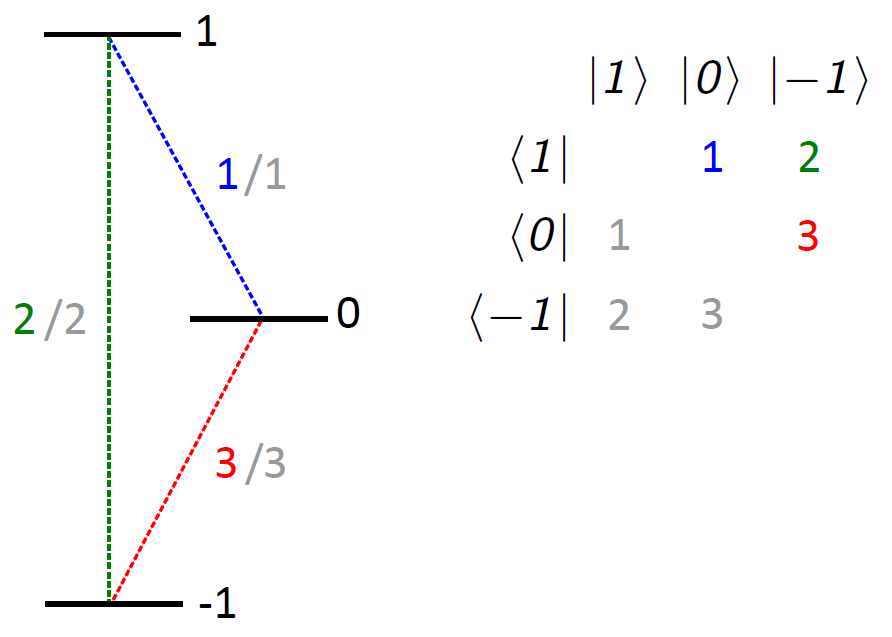
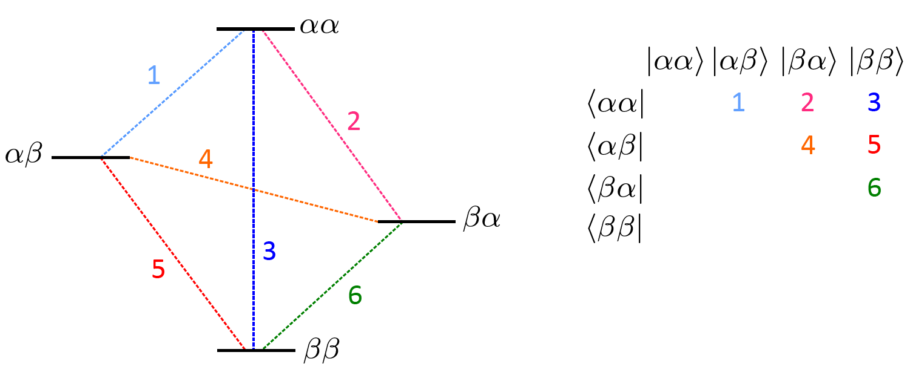

- EasySpin
- Documentation
- Publications
- Website
- Academy
- Forum
This second part of the user guide on saffron explains how to simulate a variety of (advanced) pulse EPR experiments with the general thyme method.
If you have not read the first part of the guide yet, it can be found here.
saffron includes a very fast algorithm, that allows to simulate a variety of pre- and user-defined pulse EPR experiments. But it does not support if in your simulation you want to do one of the following:
Setting up the experiment is pretty much the same as in part I of the user guide. The biggest difference now is, that real pulses are required, which adds more fields to the pulse definition.
In this guide, we are going to cover the following topics:
Here is a simple example on how to run a manually defined three-pulse ESEEM with transient detection. The example below is the extension of what was shown at the end of this section in part I of the user guide. By now you should be familiar with how to set up a user-defined sequence so we are only going to discuss the additional fields:
% Spin system
Sys.S = 1/2;
Sys.Nucs = '1H';
Sys.A_ = [5 2]; % MHz
% Experiment
p90.Flip = pi/2;
p90.tp = 0.020; % pulse length, µs
tau = 0.2; % µs
Exp.Field = 350; % MT
Exp.Sequence = {p90 tau p90 0 p90 tau};
Exp.mwFreq = 9.8; % pulse frequency
Exp.DetWindow = [-0.1 0.1]; % add a detection window for recording transients, µs
Exp.nPoints = 5; % only 5 data points
Exp.Dim1 = {'d2', 0.1}; % increment 2nd delay by 0.1 µs
We added a total of three lines: p90.tp, Exp.mwFreq and Exp.DetWindow.
p90.tp was necessary as all pulses must now be real pulses. With Exp.mwFreq we tell saffron the carrier frequency for these monochromatic pulses (frequency-swept pulses will be discussed later), and with Exp.DetWindow we request a detection window with a width of 200 ns, centered around the end of the second τ period.
We also set Exp.nPoints to 5 to make the output more comprehensible and to save time.
If the above is run with saffron without any output arguments
saffron(Sys,Exp)
a figure is generated. The two horizontal axes are the time of the transient in microseconds and the data points in the indirect dimension, and the vertical axis is the signal.
Detection is controlled with the field Exp.DetWindow. It allows to use single-point detection as well as transient detection.
The position of the detection is set in relation to the end of the last event in the pulse sequence, which is the zero time of the detection.
This last event can be a pulse or a free evolution period. You are also free to position your detection anyway you want, with the only requirement, that it must not overlap with the last pulse.
Take for example the pulse sequence for the stimulated echo:
Exp.Sequence = {p90 tau p90 0 p90 tau};
The echo that we want to detect appears more or less centered around the end of the second τ-period. Hence we can set the detection window such that it is centered around that time.
Exp.DetWindow = [-0.1 0.1]; % µs
The detection window provide a lot freedom with where you want to detect. To detect an FID of a length τ after the last pulse, we could for example write:
% Keeping the same sequence definition as above
Exp.Sequence = {p90 tau p90 0 p90 tau};
Exp.DetWindow = [-tau 0];
% Omitting the last free evolution period
Exp.Sequence = {p90 tau p90 0 p90};
Exp.DetWindow = [0 tau];
Both will give the same result. In the second one, the last event is the pulse, which means the zero time of the detection window is the end of the pulse.
Exp.DetWindow also allows single point detection:
Exp.Sequence = {p90 tau p90 0 p90 tau};
Exp.DetWindow = 0;
Another field that can be specified is the down conversion frequency Exp.DetFreq.
By default saffron uses Exp.mwFreq for down conversion.
For down conversion with a different the frequency has to be specified in GHz:
Exp.DetWindow also allows single point detection:
Exp.DetFreq = 9.7; % Down conversion with 9.7 GHz Exp.DetFreq = 0; % No down conversionIf down-conversion is switched off, the signal is returned in the simulation frame.
The last field related to detection is Exp.DetIntegrate, which, if switched on, tell saffron to integrate the signal.
Something to keep in mind: The entire detection window is used. This means, that if there is other echoes within the detection window, those will get integrated as well and might interfere with your data.
Frequency-modulated pulses
saffron not only supports monochromatic rectangular pulses, but works with all pulse shapes that are described in the documentation and the userguide of pulse.
Note, that if you work with frequency swept pulses, refocusing conditions might be slightly different to what you are used from working with rectangular pulses, e. g. the echo position might shift slightly, or the last pulse has to have half the length of the previous pulses to ensure proper refocusing.
Let us create a two-pulse echo sequence with linearly-swept chirp pulses with smoothed edges. First, we start with the spin system:
Sys.S = 1/2; Sys.g = [2.00906 2.0062 2.0023]; Sys.A = [11.5 11.5 95]; Sys.Nucs = '14N';
Next, we set up the pulses. As we are now using frequency-swept pulses, a lot more fields need to be provided:
% 90°-pulse Chirp90.Type = 'quartersin/linear'; Chirp90.tp = 0.200; Chirp90.Flip = pi/2; Chirp90.Frequency = [-120 120]; % excitation band, MHz Chirp90.trise = 0.030; % 180°-pulse Chirp180.Type = 'quartersin/linear'; Chirp180.tp = 0.100; Chirp180.Flip = pi; Chirp180.Frequency = [-120 120]; % excitation band, MHz Chirp180.trise = 0.030;
With Par.Frequency we define the frequency sweep, in MHz. This is defined in relation to Exp.mwFreq which we will add later.
Par.tp is the rise time and specific to the amplitude modulation function that we chose with Par.Type = 'quartersin/linear';.
Now the last thing to do is to set up the Exp structure.
Since we know, that the echo position depends on the interpulse delay and the length of the refocusing pulse, we slightly adapt the sequence to keep the echo centered in our detection window.
tau = 0.5;
Exp.Sequence = {Chirp90 tau Chirp180 tau+Chirp180.tp};
Exp.mwFreq = 9.1;
Exp.Field = 324.9;
Exp.DetWindow = [-0.02 0.02];
If you run this, you will soon notice, that the echo has a negative amplitude. By changing the phase of the pulses, we can make it positive:
% Change phase of both pulses by 180° Chirp90.Phase = pi; Chirp180.Phase = pi;
In part I of the guide we discussed how to change delays in any dimension, so we are not going to cover it here again.
Instead we are going to have a look at how to sweep pulse parameters. Every pulse parameter can be changed during the course of the experiment. For more details, see here.
Now, let us gradually decrease the flip angle of the second pulse in the above example. All we have to do is add the following lines:
Exp.nPoints = 20;
Exp.Dim1 = {'p1.Flip' -pi/30};
Now, let us change the frequency band of both pulses. With
Exp.nPoints = 20;
Exp.Dim1 = {'p1.Frequency,p2.Frequency' [+5 -5]};
we reduce the bandwidth of both pulses by 10 MHz each step.
It is also possible to combine different pulse parameters:
Exp.nPoints = 20;
Exp.Dim1 = {'p1.Frequency,p2.Frequency' [+5 -5]; 'p1.Flip' -pi/30};
combines the two above examples.
You can also change different parameters of the same pulse along different dimensions:
Exp.nPoints = [10 10];
Exp.Dim1 = {'p2.Frequency' [+5 -5]};
Exp.Dim2 = {'p2.Flip' -pi/30};
This gives you complete freedom with designing your experiment or running pulse optimization routines.
Phase cycling
saffron gives you a simple way to phase-cycle pulses with Exp.PhaseCycle.
Let us have a look at the three-pulse ESEEM sequence:
p90.tp = 0.020;
p90.Flip = pi/2;
p90.Phase = pi;
tau = 0.5;
T = 1;
Exp.Sequence = {p90 tau p90 T p90 tau};
Exp.mwFreq = 9.1;
Exp.Field = 324.9;
Exp.DetWindow = [-0.1 0.1];
To get a clean echo, three-pulse ESEEM uses a [+(+x)-(-x)] phase-cycle on the first π/2 pulse and [+(+x)-(-x)] on the third π/2 pulse.
In saffron this is achieved by
Exp.PhaseCycle{1} = [0, 1; pi, -1];
Exp.PhaseCycle{3} = [0, 1; pi, -1];
where the indexing corresponds to the pulse index, e.g. Exp.PhaseCycle{3} corresponds to the third pulse.
An alternative way to write this exact phase cycle would be:
PC = [0, 1; pi, -1];
Exp.PhaseCycle = {PC [] PC};
Here, the explicit declaration of the empty brackets [] means no phase cycle for the second pulse.
It is not possible to phase cycle pulses simultaneously with Exp.PhaseCycle.
However, you simultaneous phase cycling can be done through an additional indirect dimension.
If, for example, you want to phase cycle the second and third pulse together you could write:
Exp.nPoints = 4;
Exp.Dim1 = {'p2.Phase,p3.Phase' pi/4}
After the simulation finished, you need to sum up the signals with the correct detection phase manually.
Although Exp.DimX can be used for phase-cycling of single pulses as well, this is not recommended as using Exp.PhaseCycle, significantly improves performance.
Phase cycling in this form is not available for the fast method, but something similar to it can be achieved with filters.
Relaxation Times
The simplest way to use relaxation is to apply the same longitudinal and transverse relaxation times (in microseconds) to all transitions of the spin system. A 1.5 microseconds longitudinal relaxation time and a 0.5 microseconds transverse relaxation time can be assigned to all transitions in the system with
Sys.T1 = 1.5; % longitudinal relaxation time in microseconds Sys.T2 = 0.5; % transverse relaxation time in microseconds
In some cases, it might be of interest to investigate the effect of only one type of relaxation: If only T1 or T2 are defined, the missing relaxation time is by default set to 1010 microseconds.
In systems with larger spin quantum numbers or several spins, relaxation times can differ for different types of transitions. If you do not want to use the same relaxation time for each transition, relaxation times can also be provided in matrices. To set up the input correctly, some knowledge of the spin system and the resulting density matrices is required: For a single-spin system the basis functions of the operators in the Zeeman basis state are in descending order, left to right (more at sop). E.g., an S = 1 system has three states and the three pathways connecting them can be described by a 3 × 3 (density like) matrix:

With this we can now design matrix input for T1 and T2, that can be translated into a relaxation superoperator:
Sys.T1(1,2) = 1.5; % transition 1 (blue) Sys.T1(1,3) = 0.5; % transition 2 (green) Sys.T1(2,3) = 1.4; % transition 3 (red) Sys.T2(1,2) = 0.3; % transition 1 (blue) Sys.T2(1,3) = 0.1; % transition 2 (green) Sys.T2(2,3) = 0.3; % transition 3 (red)
Sys.T1 = 0 1.5 0.5 0 0 1.4 0 0 0 Sys.T2 = 0 0.3 0.1 0 0 0.3 0 0 0
It suffices to define the upper triangle only (as done above). But for longitudinal (not so for transverse) relaxation there can be a difference between "up" (|+1>→|0>) and "down" (|0>→|+1>) pathways. If you are interested in assigning different relaxation times for opposing directions, you can do this by using the lower triangle:
Sys.T1(2,1) = 1.3; % transition 1 (grey) Sys.T1(3,1) = 0.7; % transition 2 (grey) Sys.T1(3,2) = 1.1; % transition 3 (grey)
Sys.T1 = 0 1.5 0.5 1.3 0 1.4 0.7 1.1 0
In case the lower triangle is not defined for T1, the upper triangle is used for up and down directions.
Any transitions that are not assigned a relaxation time (matrix element 0 in the upper triangle), are automatically set to 1010 microseconds, which effectively switches relaxation off on that pathway.
Relaxation times in the lower triangle of T2 are ignored.
Spin systems that contain several spins are assigned relaxation times analogously, but require a slightly deeper insight into ordering of the states: The representation of the operators is in terms of product Zeeman basis states |m1,m2,m3,..>, where m1 is for the first spin, m2 is for the second spin, etc. The basis functions are again in descending order mi, left to the right. E.g. for two coupled (electron) spins with S, = 1/2, you get the following energy level scheme:
The detected signal corresponds to the expectation value of ⟨Ŝ-⟩. This means that the signals real part contains ⟨Ŝx⟩ and the imaginary part ⟨-Ŝy⟩. Keep this in mind, if you need ⟨Ŝy⟩.
In some simulations you may observe echoes in your timetrace that should not be there.
Besides physical reasons (incomplete phase cycling, different refocusing conditions,...), such artifact echoes can arise from an aliasing effect if the spectrum is insufficiently sampled (not enough orientations are used).
This can easily be checked: By increasing the number of samples from your distribution the artifact echoes should move, spread further apart or vanish, while physical echoes stay in place.
The number of orientations that are being used for the simulation can be controlled with Opt.GridSize.
By default saffron assumes Opt.GridSize = 31.
For simulations using the thyme method, saffron usually changes into a simulation frame that rotates slower than the labframe.
By default, the simulation frame changes all electron Zeeman interaction to about 3 GHz - the exact value depends on your experiment definition.
This has the advantage that a much larger time step can be used (which speeds up the simulation).
In most cases this will not have an effect of the outcome of the simulation.
However, if the off-diagonal elements in your Hamiltonian are large, this could lead to problems.
If you suspect this is the case, you can switch the frame shift off by setting Opt.SimFreq = 0, or set Opt.SimFreq to a value you would find appropriate.
For example: For a Q-band simulation where all pulses have frequencies between 33 and 34 GHz, saffron will select 31 GHz as simulation frequency.
If you are worried that this might interfere with your Hamiltonian, you could consider setting Opt.SimFreq to 15 GHz, which would still be significantly faster than Opt.SimFreq = 0.